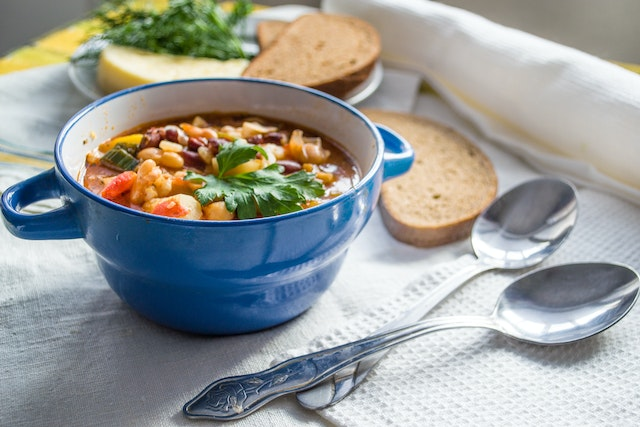

1 large can of petite diced tomatoes (28 oz)
1 can of kidney beans
1 small container of ground beef
½ onion
1 packet of taco seasoning
1 bag of frozen sweet white corn
salt and pepper
In a pot, cook the ground beef with the diced ½ onion. Drain the excess fat out of the meat, then cook in the taco seasoning. Cook for about 2 minutes. Add the petite diced tomatoes, kidney beans, and corn. Simmer for 5-10 minutes. Add salt and pepper to your liking. This will make an entire pot full, so it can be saved for leftovers or served to a group.
Dinners
Taco soup: Time - 20 minutes, materials - 1 pot
1 package of Spaghetti noodles
1 jar of Prego tomato sauce
1 small container of ground beef
½ onion
Sour cream (optional)
Salt and pepper
In one pot, fill with water and sprinkle in some salt. Add spaghetti noodles, however many you want. Boil noodles until al dente. Drain. In the other pot, cook ground beef with ½ onion and salt and pepper until brown. Drain the excess fat from the meat. Add tomato sauce. Add sauce and noodles together. Add sour cream to the sauce to make it creamy (optional).